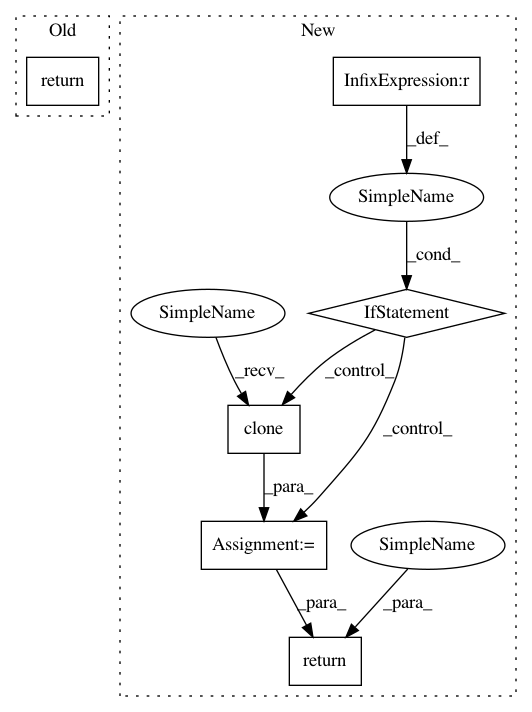

69bee69d1767fded69ee6fc6d7b1ddc29d531987,ants/utils/crop_image.py,,decrop_image,#Any#Any#,103
Before Change
libfn = utils.get_lib_fn("cropImageF%i" % cropped_image.dimension)
itkimage = libfn(cropped_image.pointer, full_image.pointer, 1, 1, [], [])
return iio.ANTsImage(pixeltype="float", dimension=cropped_image.dimension,
components=cropped_image.components, pointer=itkimage).clone(inpixeltype)
After Change
itkimage = libfn(cropped_image.pointer, full_image.pointer, 1, 1, [], [])
ants_image = iio.ANTsImage(pixeltype="float", dimension=cropped_image.dimension,
components=cropped_image.components, pointer=itkimage)
if inpixeltype != "float":
ants_image = ants_image.clone(inpixeltype)
return ants_image
In pattern: SUPERPATTERN
Frequency: 3
Non-data size: 6
Instances
Project Name: ANTsX/ANTsPy
Commit Name: 69bee69d1767fded69ee6fc6d7b1ddc29d531987
Time: 2017-09-26
Author: ncullen.th@dartmouth.edu
File Name: ants/utils/crop_image.py
Class Name:
Method Name: decrop_image
Project Name: ANTsX/ANTsPy
Commit Name: 69bee69d1767fded69ee6fc6d7b1ddc29d531987
Time: 2017-09-26
Author: ncullen.th@dartmouth.edu
File Name: ants/utils/crop_image.py
Class Name:
Method Name: crop_indices
Project Name: OpenNMT/OpenNMT-tf
Commit Name: 30efaaa572d798212c926e5b2edbf2b0fe7fa2f1
Time: 2019-07-15
Author: guillaume.klein@systrangroup.com
File Name: opennmt/decoders/rnn_decoder.py
Class Name: AttentionalRNNDecoder
Method Name: _get_initial_state